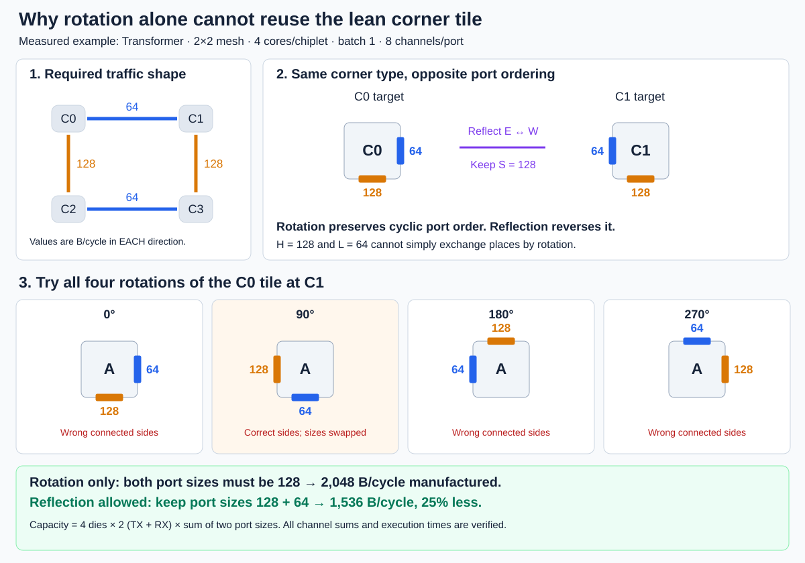
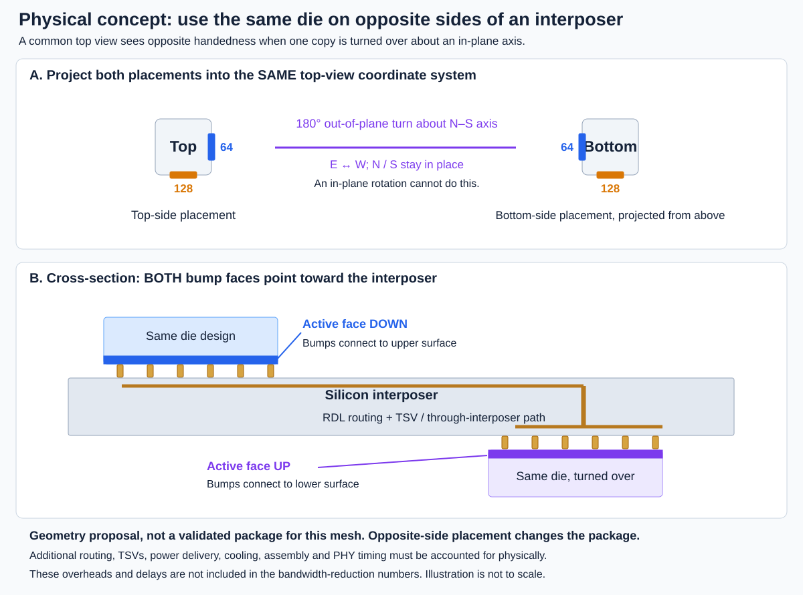

Rotation-only designs can still meet the timing target, but may need larger shared ports. Reflection can align the asymmetric port order with the mesh and avoid that extra manufactured capacity. The example below uses the actual Transformer 2×2, batch-1, eight-channel result.

Download orientation explanation (SVG)
The same die is placed above or below the interposer, with its active bump face toward the interposer. From a common top view, turning the die over reverses its projected handedness. The drawing shows a proposed geometric implementation, not a verified package design for our mesh.

Mappings with at most 0.1% execution-time increase on 16 chiplets × 4 cores, batch 64. Each arrow shows required bandwidth summed across 8 channels (B/cycle), not cumulative traffic or installed tile capacity. Arrow direction matters.
One bandwidth profile per mapping, using a consistent selection rule. Simple global rotations and uniform scaling do not count as new patterns. Selected normalized directed-link distributions differ by at least 0.05 in L1 distance after accounting for global rotation. A feasible profile is not necessarily the unique componentwise minimum. Chiplet coordinates below are the recorded coordinates; diagrams are not rotated to align patterns.